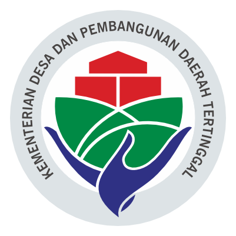
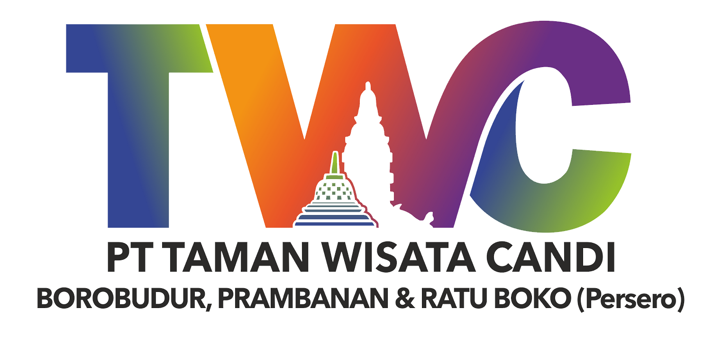
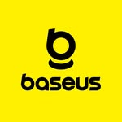
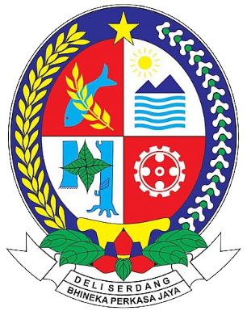
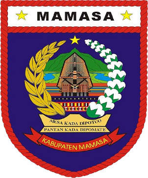
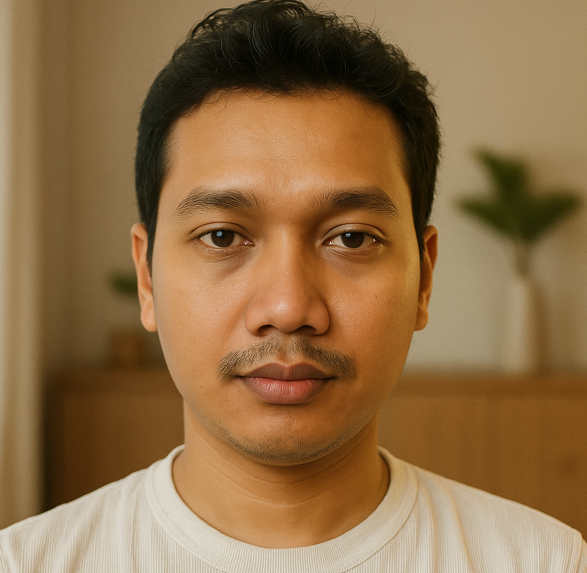
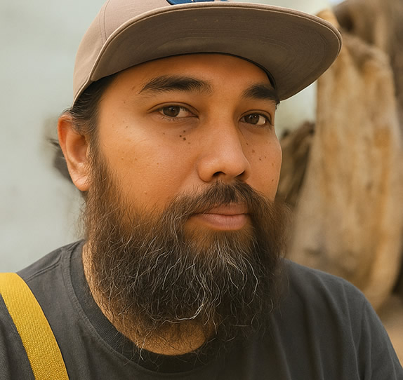
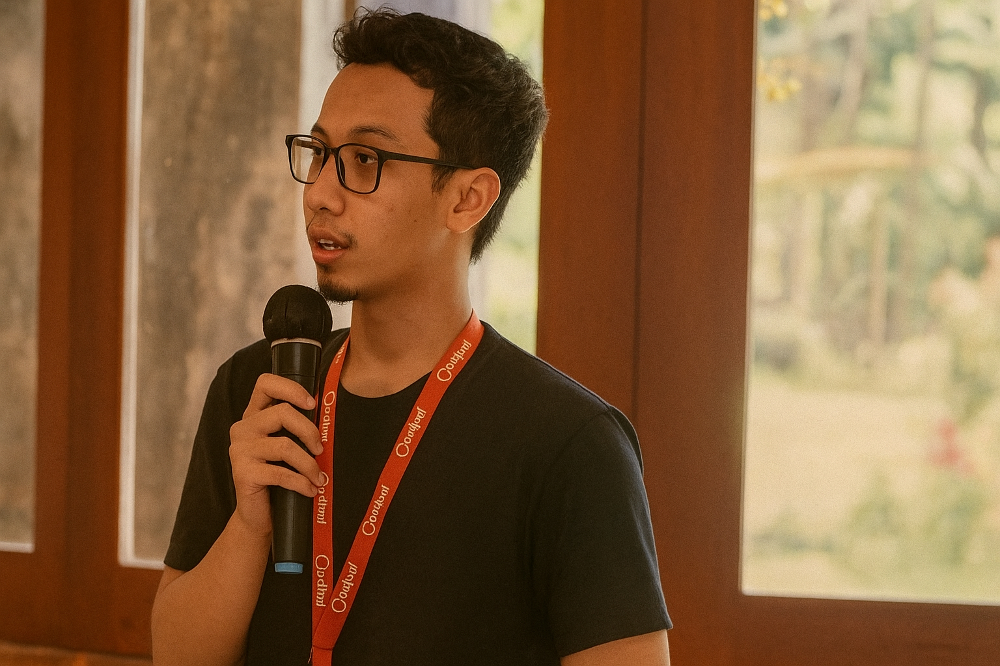

SIRKULASI System
Sekretariat Kabinet RI
Pemerintah Pusat
Sistem persuratan dan sirkulasi dokumen di lingkungan instansi kepresidenan.
Dua lini usaha di bawah satu perusahaan: sistem digital untuk pemerintah dan korporasi, serta perdagangan komoditas industri. Sistem digital dan perdagangan komoditas industri.
Dipercaya oleh instansi pemerintah dan korporasi





Tahun berdiri, melayani sektor publik dan swasta
Sistem digital yang telah dioperasikan
Tenaga ahli senior lintas disiplin
Proyek dengan pendampingan pasca-implementasi
01 / Studi Kasus
Gulir untuk menelusuri · klik kartu untuk melompatGeser kartu untuk melihat proyek lain
Sekretariat Kabinet RI
Pemerintah Pusat
Sistem persuratan dan sirkulasi dokumen di lingkungan instansi kepresidenan.
PT Taman Wisata Candi (InJourney)
Pariwisata / BUMN
Sistem ticketing destinasi wisata bervolume tinggi, dirancang agar tetap stabil pada musim liburan.
InJourney Destination Management
Pariwisata / BUMN
Aplikasi pendukung operasional pengelolaan destinasi.
Pemerintah Kabupaten Mamasa
Pemerintah Daerah
Sistem manajemen kepegawaian daerah.
Baseus Indonesia
Ritel / Konsumen
Platform e-commerce brand global untuk pasar Indonesia.
Deras.id
Media / Headless CMS
Portal berita dengan arsitektur headless CMS.
LPP
Asesmen daring
Platform asesmen dan penilaian daring.
02 / Masalah
Sistem yang tidak dipakai pengguna.
Aplikasi yang berhenti berkembang setelah vendor pergi.
Infrastruktur yang tidak siap saat trafik melonjak di hari pertama layanan dibuka.
Masalahnya jarang pada teknologi, lebih sering pada perencanaan, desain pengalaman pengguna, dan dukungan setelah sistem berjalan.
JKreasi bekerja di tiga titik itu sekaligus.
Menerjemahkan kebutuhan organisasi menjadi peta jalan teknologi yang realistis dan dapat dianggarkan. Kami membantu menyusun kebutuhan, memilih arsitektur, dan menyiapkan dokumen teknis yang siap masuk proses pengadaan.
Aplikasi web dan mobile yang menggabungkan desain antarmuka intuitif dengan arsitektur modern, menghasilkan sistem yang andal, scalable, aman, dan nyaman digunakan.
Desain yang berangkat dari perilaku pengguna sebenarnya, bukan asumsi. Penting terutama untuk layanan publik yang penggunanya sangat beragam.
Mengotomatiskan siklus pengembangan, mengoptimalkan infrastruktur, dan memastikan sistem tetap andal saat beban puncak.
Sistem tidak berhenti saat serah terima. Kami menjaga operasional, memantau performa, dan menghubungkan sistem baru dengan sistem yang sudah berjalan.
Tidak masalah. Sebagian besar instansi datang dengan masalah, bukan dengan daftar layanan. Ceritakan situasinya. Kami bantu petakan kebutuhan, opsi arsitektur, dan estimasi cakupan sebelum Anda memutuskan apa pun.
03 / Layanan
Lima pilar yang saling menyambung di sekitar satu pusat. Arahkan kursor ke tiap sel untuk melihat rinciannya.
Arahkan kursor atau klik sel · gunakan tombol panah untuk berpindahKetuk sel untuk melihat rinciannya
Sulfur dari produsen dalam negeri untuk pabrik pupuk, asam, dan industri kimia. Tersedia curah maupun kemasan, dari ratusan sampai ribuan ton.
Lihat layanan perdagangan05 / Tim
Tenaga ahli senior yang menangani langsung proyek Anda, bukan tim yang berganti di tengah jalan.

Ahmad Qorib Senior Developer
Wardhana Senior DevOps Engineer
Ahmad Rizal Senior UI/UX DesignerHal-hal yang paling sering ditanyakan instansi sebelum memulai kerja sama.
Ya. Kami terbiasa bekerja dengan instansi pemerintah pusat dan daerah, termasuk penyusunan dokumen teknis dan pelaporan sesuai ketentuan.
Bergantung pada cakupan. Sistem berskala menengah umumnya 3–6 bulan sejak discovery hingga peluncuran, dengan demo berkala di setiap tahap.
Ya. Kode sumber, dokumentasi, dan hak atas sistem diserahkan kepada klien sesuai kesepakatan kontrak.
Kami menangani integrasi dan migrasi bertahap, sehingga layanan tetap berjalan selama proses modernisasi.
Ada. Managed service mencakup pemantauan, pemeliharaan, dan dukungan teknis dengan tingkat layanan yang disepakati.
Bisa. Alih pengetahuan dan pelatihan tim internal adalah bagian standar dari penyerahan proyek kami.
Masih ada yang ingin ditanyakan? Hubungi kami langsung
Mulai
Ceritakan situasinya. Sesi konsultasi awal tanpa biaya dan tanpa ikatan.
Ceritakan situasinya secara singkat. Tim kami akan menghubungi Anda dalam 1×24 jam kerja.